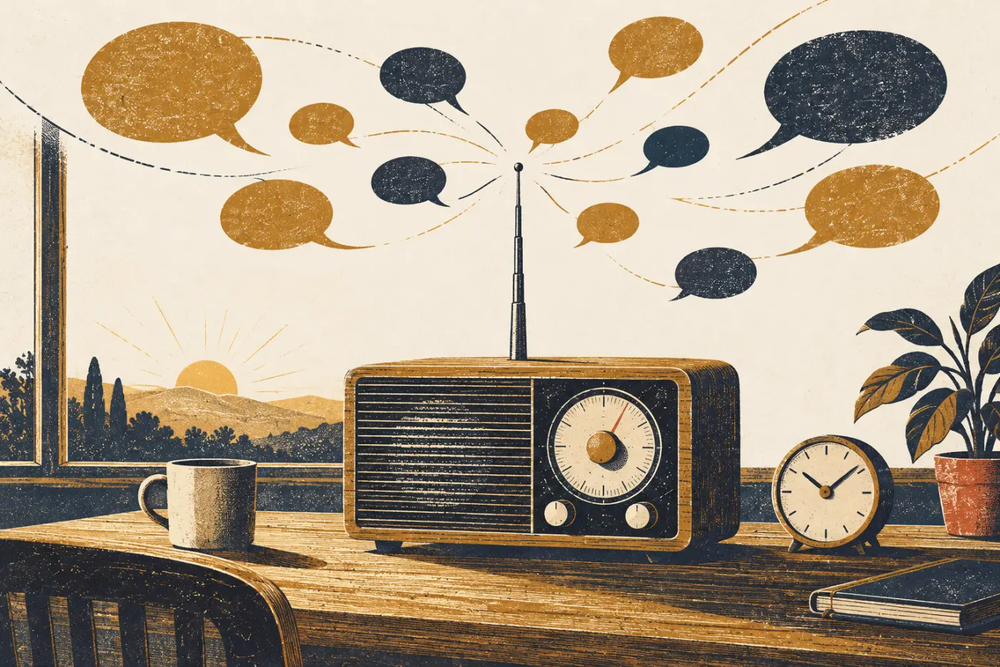
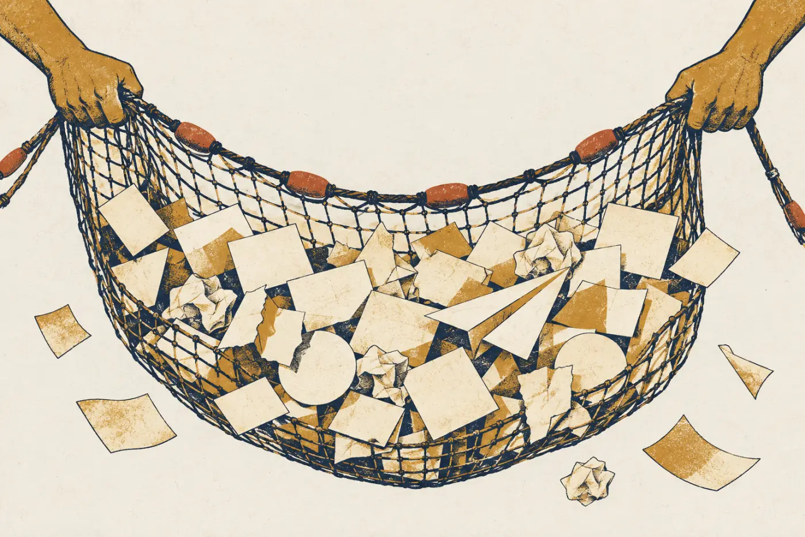
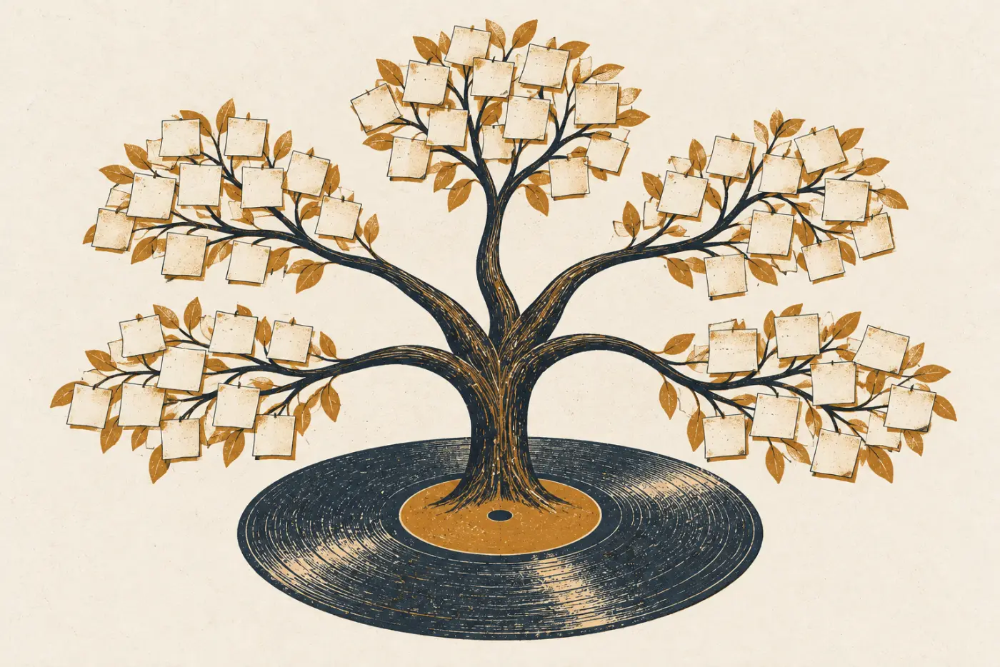
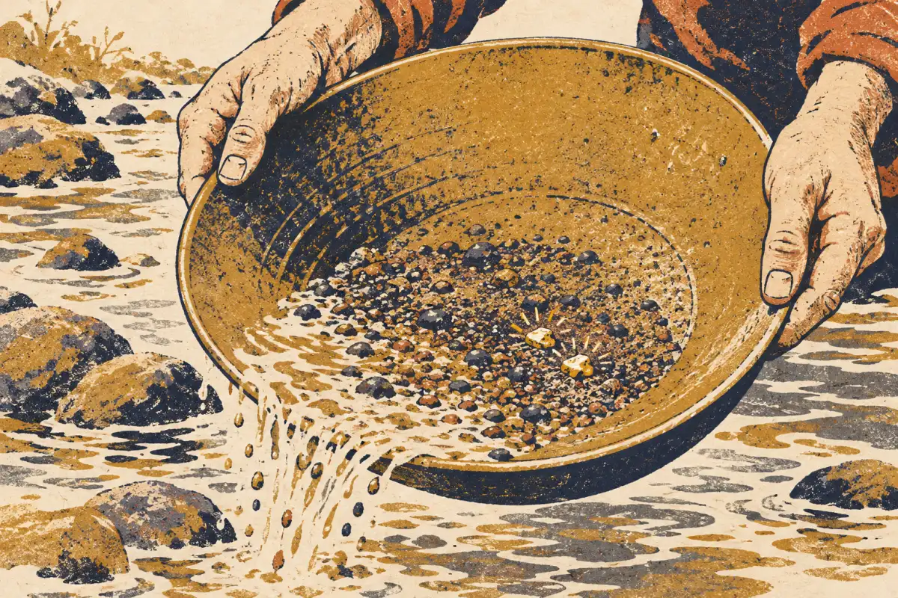
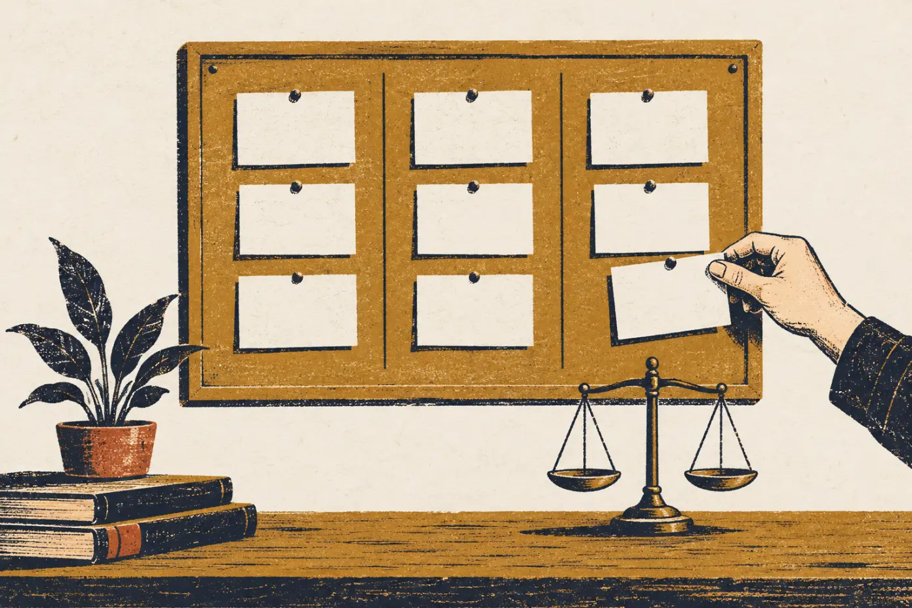
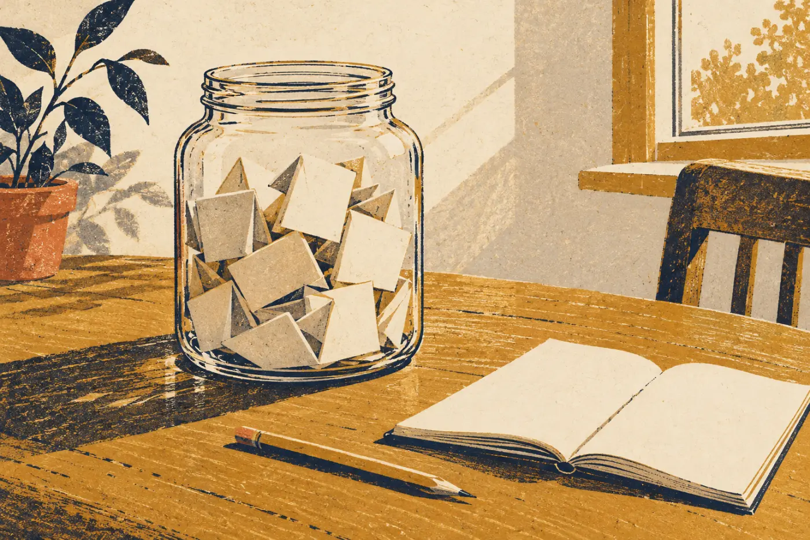

用户越来越多，小明还是每天花一个小时看用户反馈。不只他一个人：团队里每个人都会去产品里、微博、贴吧、知乎、微信群，回复用户的问题和建议。
后来，不少用户在知乎、微博上专门夸网易云“重视用户的声音”，逢人就推荐。认真对待反馈，本身就在攒口碑。
不同渠道来的人，也不一样。先认一认：

C 面 · 收需求
AI产品思维第三课：把需求收全、理清

配套视频
写在前面
A 面讲怎么辨需求，B 面讲怎么选需求。可需求一开始是从哪来的？
这一面往前走一步：怎么把四面八方的需求收全，再理成一张看得清的图。收得越全、理得越清，后面判断起来就越有底。
故事还是网易云音乐，主角还是产品经理小明。
TRACK 01 · 开场
收需求的时候，你是情报员，不是法官。
用户越来越多，小明还是每天花一个小时看用户反馈。不只他一个人：团队里每个人都会去产品里、微博、贴吧、知乎、微信群，回复用户的问题和建议。
后来，不少用户在知乎、微博上专门夸网易云“重视用户的声音”，逢人就推荐。认真对待反馈，本身就在攒口碑。
不同渠道来的人，也不一样。先认一认：

先点左边的渠道，再点右边对应的用户特点。手机上也一样点。
只看一个渠道，就只听到一种人的声音。产品内反馈的多是重度用户，他们的意见很宝贵，却不代表刚来的新用户。
而且每个反馈渠道，同时也是用户接触你品牌的地方。认真回应，就是在宣传产品。
TRACK 02 · 不带情绪
老板的需求、同事的随口一说、最不靠谱的吐槽，都先收下。
收集需求的时候，不管提的人是用户、同事、老板、朋友，还是毫不相干的人，都先收下。要把“需求”和“提需求的人”分开：身份、动机，留到分析的时候再看。
要是和老板关系不好，总觉得老板提的需求不靠谱，那就先调整心态：把老板当成一个普通用户。
就算是一时最不靠谱的需求，等时间和环境变了，也可能变得有用。

今天收到 12 条反馈。每条只能做一件事：收进需求池，或者删掉。
还剩 12 条没处理
每一条“看起来没用”的反馈后面，都可能藏着一个真麻烦，或者一个后来的好功能。收的时候只管收，判断留到下一步：用 A 面的三招去辨，用 B 面的三个圈去选。
TRACK 03 · 理需求
按用户和产品打交道的每一个环节，把需求理成一张地图。
收来的需求乱成一堆，怎么办？小明的办法是按用户使用产品的环节来分。网易云早期分成六个环节：生产音乐、发现音乐、管理音乐、听音乐、讨论和分享音乐，还有音乐的其他消费，比如演唱会、明星周边。
其中“发现音乐”是网易云切入市场的重点。他习惯用脑图来管理需求。理清之后，产品怎样一步步满足用户、影响用户，就看得清清楚楚。每一格还可以继续往下分，分到能看见创新点为止。

把 15 条需求放进对应的环节。电脑上可以拖；手机上先点需求，再点环节。
理完一看，“讨论和分享音乐”这一格，当时几乎没有哪个产品认真做过，最初的需求只是把喜欢的歌分享到社交网络。网易云后来的评论区、歌单分享、歌词图片，都长在这一格里。
需求理成地图，空着的格子就藏不住了。
TRACK 04 · 二八定律
热门需求，对手早就做了；创新常藏在长尾里。
需求也符合二八定律：80% 的人提的，都是那 20% 的需求。越是主流的需求，越早被大家挖空；还没被发掘的，才可能是创新所在。
导入歌单就是这样：只有几个人在说，和被提了上千次的排行榜比，差了成百上千倍，却成了网易云最关键的一招。
当然，长尾也不全是宝。只按被提的次数排需求，等于把判断交给了计数器。那还要产品经理干什么？

这是 24 条需求，按被提的次数从高到低排。点柱子看看是什么需求，在右边的长尾里挑出两块“金子”：独一无二、能打中用户的大麻烦、对手做不了。
两块金子是“把别的 App 里收藏的歌单导进来”和“看看别人听这首歌时，都想起了什么”。前者打中了换 App 时最大的麻烦：几百首收藏带不走，而原来的 App 绝不会帮用户搬家；后者在听歌之外开出了一个新维度：共鸣，也就是 A 面讲过的评论区。它们被提的次数都很少。
长尾里其他的需求，有的不错但不是大麻烦，有的离题，有的受众太小。长尾值得多花精力，但不是每一条都是宝。
TRACK 05 · 排版本
体验修补、主打亮点、长远布局：一个版本里，三类都要有。
考虑一个版本的重点时，小明会把需求分成三类：体验修补，把已有的功能修顺；主打亮点，这个版本拿出去最值得说的东西；长远布局，现在看不出效果、却在为一两年后攒力量的事。这样分，和运营、市场的同事沟通起来也清楚。
他还有一条规矩：花在眼前需求和长期目标上的精力，至少要一比一。网易云的评论功能很早就上线了，一开始没火；正是攒了那段时间，后来才能爆发。

把 9 条需求分进三类。每张卡上标了大约要花几个人天；下面的天平按人天算：眼前的（修补 + 亮点）和长远布局，各占多少精力。
TRACK 06 · 用到你的点子上
给你的点子收一池需求，再理成一张图。
选一个点子：可以是你在 A 面写体检卡时用的那个，也可以从三张点子卡里挑。
至少收 8 条需求，而且要来自不同的地方：自己想的、访谈同学听到的、网上评论里看到的……然后把它们放进使用环节，标出一块长尾里的金子，再给下个版本排一排。
写完可以下载成图片。工作坊上，你们组会接着用这一池需求。

用户用你的工具，会经过哪几个环节？最多五个，可以改。
每行一条需求：写下需求，选来源、环节和它在下个版本里的类别。点 ★ 标出你在长尾里找到的那块金子（只能标一条）。
收尾